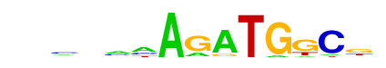

| p-value: | 1e-89 |
| log p-value: | -2.054e+02 |
| Information Content per bp: | 1.564 |
| Number of Target Sequences with motif | 777.0 |
| Percentage of Target Sequences with motif | 5.10% |
| Number of Background Sequences with motif | 564.4 |
| Percentage of Background Sequences with motif | 1.72% |
| Average Position of motif in Targets | 48.1 +/- 24.9bp |
| Average Position of motif in Background | 51.6 +/- 28.9bp |
| Strand Bias (log2 ratio + to - strand density) | 10.0 |
| Multiplicity (# of sites on avg that occur together) | 1.03 |
| Motif File: | file (matrix) reverse opposite |
| Rank | Match Score | Redundant Motif | P-value | log P-value | % of Targets | % of Background | Motif file |
| 1 | 0.943 |  | 1e-81 | -186.743269 | 4.18% | 1.29% | motif file (matrix) |
| 2 | 0.946 | 1e-80 | -186.299192 | 4.55% | 1.51% | motif file (matrix) | |
| 3 | 0.833 | 1e-58 | -135.379308 | 2.15% | 0.48% | motif file (matrix) | |
| 4 | 0.861 | 1e-47 | -109.849217 | 7.08% | 3.90% | motif file (matrix) | |
| 5 | 0.713 | 1e-26 | -61.450148 | 1.38% | 0.43% | motif file (matrix) | |
| 6 | 0.692 | 1e-22 | -51.537646 | 17.76% | 14.24% | motif file (matrix) | |
| 7 | 0.690 | 1e-22 | -50.700610 | 0.35% | 0.01% | motif file (matrix) | |
| 8 | 0.702 | 1e-21 | -48.553239 | 9.80% | 7.22% | motif file (matrix) | |
| 9 | 0.724 | 1e-17 | -39.656396 | 0.45% | 0.07% | motif file (matrix) | |
| 10 | 0.702 | 1e-11 | -26.931579 | 1.22% | 0.60% | motif file (matrix) |